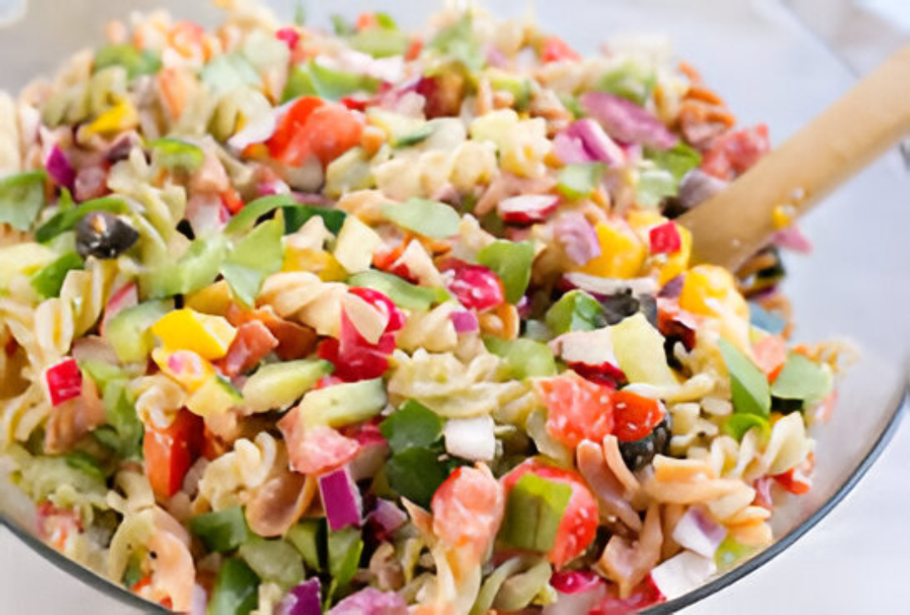

Rainbow Veggie Pasta Cups
Colorful pasta cups packed with veggies — fun, light, and kid-approved.

Recipe Creator
Afnan Al-Shilail
Recipe creator
Details
Category:
Lunch
Description:
Warm, cozy pasta cups that parents trust and kids enjoy. Great for school lunchboxes and quick dinners.
Ingredients
- Whole-wheat pasta (1 cup)
- Bell pepper (1/2 cup, diced)
- Sweet corn (1/3 cup)
- Cheddar cheese (1/4 cup)
- Greek yogurt (2 tbsp)
Instructions
- Cook pasta until tender. Drain and let it cool slightly.
- Mix pasta with veggies, cheese, and yogurt.
- Spoon into muffin cups and bake for 10 minutes at 180°C.
- Serve warm.
Video
Comments
My kids loved this! Easy and colorful.
Tried it for lunchbox — stayed tasty even cold.
Can I swap cheddar with mozzarella?